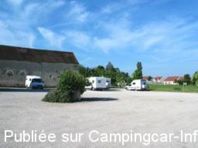
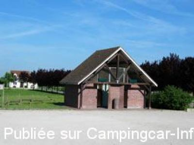

APN = Parking toléré jour/nuit de :
PONTIGNY
(N° 254)
Accès/adresse :
Rue Paul Desjardins
89230 PONTIGNY
89230 PONTIGNY
Latitude : (Nord) 47.91055° Décimaux ou 47° 54′ 37′′
Longitude : (Est) 3.71095° Décimaux ou 3° 42′ 39′′
Tarif : Gratuit
Services :

Autres informations :

Le 22/06/2005 par nomade 59

Le 22/06/2005 par nomade 59
de
Mercenier
le 21/10/2014 :
Avons passé une bonne nuit au calme au fond de l'aire pour éviter la nationale assez bruyante. Dommage d'avoir installé les bulles à verres à cet endroit certains viennent déposer leurs bouteilles très tôt.
Avons passé une bonne nuit au calme au fond de l'aire pour éviter la nationale assez bruyante. Dommage d'avoir installé les bulles à verres à cet endroit certains viennent déposer leurs bouteilles très tôt.
de
letertre
le 17/05/2013 :
j'y passe regulierement ,calme ,et une prise de courant en hauteur dans la halle
j'y passe regulierement ,calme ,et une prise de courant en hauteur dans la halle
de
Edouard
le 06/01/2013 :
En venant de la Belgique et direction le sud de la France, c'est ma 1ere aire de repos, je m'installe tout au fond non loin des toilettes et j'y suis trés bien pour une nuit de repos. Le matin un bar-tabac a 100mt cuit des baguettes au fur et a mesure toutes fraiche.
En venant de la Belgique et direction le sud de la France, c'est ma 1ere aire de repos, je m'installe tout au fond non loin des toilettes et j'y suis trés bien pour une nuit de repos. Le matin un bar-tabac a 100mt cuit des baguettes au fur et a mesure toutes fraiche.
de
Nomade 59
le 20/06/2005 :
Bien de la place et assez calme si on se met dans le fond, loin de la route principale. Il y a un robinet sous la halle et des toilettes publiques
Bien de la place et assez calme si on se met dans le fond, loin de la route principale. Il y a un robinet sous la halle et des toilettes publiques
de
BOURCEY ALAIN
le 05/10/2004 :
c'est une aire très large pour manoeuvrer
on peut visiter l'abbaye de Pontigny , une belle page d'histoire et pourquoi pas se faire un très bon restaurant : le moulin de Pontigny
c'est une aire très large pour manoeuvrer
on peut visiter l'abbaye de Pontigny , une belle page d'histoire et pourquoi pas se faire un très bon restaurant : le moulin de Pontigny